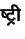

ta-ta ligature exists,
input text of the form tti is printed as
.
If instead you need it to be printed as you have
two choices.
One, if you never want the ta-ta ligature to be used, you
can edit the IFM file and comment out all the lines that refer to the
ta-ta ligature.
(The IFM file is a text file, for more information, see the
technical documentation in tech.tex.)
On the other hand, if you do want to keep the ligature, except in a few
locations in the input text (say for small point type), or if you do
not want to edit the IFM file, you can use the ligature inhibitors
{} to prevent a ligature from being used.
Whenever the {} characters are inserted between two consonants,
itrans refrains from using the ligature (if it exists, if it does
not, then these characters have basically no effect).
Instead, the half-forms of the consonants (as appropriate) are used.
Thus, even if the IFM file contains the ta-ta ligature,
the input text t{}ti always appears as
.
This is a thing to watch out for in all cases where some character has a multiple letter mapping, and each letter by itself also represents some other character. In the above example, ai is the two letter map, and both a and i represent other vowels.
Note that if you wish to suppress any ligature, you should use the {} letters consecutively, as explained in the previous paragraph. Using _ to follow some consonant allows a ligature, if it exists for the consonant pair, to be used. (Of course, tamil does not have any ligatures.)
To get a printable underscore in the Indian language text, follow normal TEX usage--use backslash underscore--\_.
Since ITRANS supports many Indian languages, it has a large list of input tokens that are mapped to consonants. For example even if ai is not a vowel in one of the languages supported by ITRANS, it still is always recognized as the ai vowel, and thus if you need it to be recognized as the a and i vowels, use the _ character as mentioned above.
0 1 2 3 4 5 6 7 8 9
.a .c .N .n ^r .D .Dh A AUM
a aa ai au b bh ch chh D Dh d dh dny E e f G g gh GY
H h I i ii J j jh JN K k kh kSh L L^i L^I LLi LLI l ld
M m N "n ~n n ^n N^ ny O o OM p ph q
.r ^r .R R R^i R^I RRi RRI r S SRI s sh shh
T Th t th U u uu v x Y y z
# language
language
#end language
language
# language
language ifm
ifm
# language
language font
font
#output=HTML_7
#output=HTML_8
#output=UTF_8
#output=TeX
#output=PostScript
#ignoreshortmarkers
#useshortmarkers
#usecsx
#ignorecsx
#include=
#endwordvowel=a
#endwordvowel=.h
## {} _ `
Version 4.0 and onwards added support for the Classical Sanskrit and Classical Sanskrit Extended encoding, which adds one ASCII character to the above list (c) and many non-ASCII characters, see the document icsx.itx for more details.
For devanagari, when using TEX, use the idevn.tex (automatically
loaded by itrans.sty, use the \usepackage{itrans.sty}
command in LATEX) which provides
modes for setting a devanagari font, and offers many commands that ease
devanagari input.
See the ITRANS Song Book documents for examples of idevn.tex usage, or,
check out the sample document file sample.itx.
In all punctuation problems, you can always get the required punctuation or digit character by ending the Indian language transliteration scope (using one of the endmarkers), then printing the required punctuation mark, and the restarting the transliteration by using the start marker.
An easier method, in TEX is to make use of the math mode for numbers. It is usually sufficient to use the $ enclosing scope to make numbers print correctly, since a $ enters mathmode and uses the math fonts. For punctuation marks, the user needs to explicitly change fonts: example:
#marathi ......{\rm ;}.......#endmarathi .
But that is preferable over this form:
#marathi ......#endmarathi ; #marathi .......#endmarathi .
shhTmii contains three consonants.
This ligature produces
, the way itrans works is as follows:
Beginning with the first consonant in the list,
itrans checks if a double-consonant ligature has
been defined for that consonant and the next one in the list.
If such a character exists, then it is used and both consonants are consumed,
and itrans repeats the procedure for the next consonant.
There is one exception to the above rule: if at all possible, the last two
consonants are handled together, that is if a ligature of the last two
consonants
exists, that is used over the pairing that would result from the above method.
Example: shhTrii produces
, both shha-Ta and Ta-ra ligatures
exist, but since the consonants Ta and ra are the last two
consonants, that ligature is used over shha-Ta.
Of course, this default behavior can be changed by appropriately placing
the ligature inhibitor sequence, {}.
Example: shhTr{}ii produces  .
.
Also, in ITRANS version 5.10, ITRANS now supports direct specification of 3 or more consonant conjuncts in the .IFM file. So, if the above given description leads to incorrect output, we can now fix it by providing explicit rules for 3 or more multi-consonant conjuncts in the IFM file.
Use this default mechanism only when it increases the readability, for
example in hindi it is better to write ``ek'', ``is'', ``tab'', instead
of ``eka'', ``isa'', ``taba'' for  .
But, it is better to include the ``a'' in words such as ``manushhya''--.
.
But, it is better to include the ``a'' in words such as ``manushhya''--.
This default mechanism is activated only for the devanagari and bengali input. (The keyword DEFAULTVOWEL in the IFM file directs whether the last consonant in a word should be considered as paired the half-form, or the a-form, if the form is left unspecified.)
The above default working can be avoided by specifying the vowel to end words in the input document.
#endwordvowel=a
#endwordvowel=.h
The first command makes the default vowel be ``a'', which the second command will make the default vowel a ``half-form''--viraam. The endwordvowel command will override the DEFAULTVOWEL specification in the IFM file. So, for sanskrit, it is useful to include this command in the input file:
#endwordvowel=.h
which puts a viraam at the end of any word that does not end in a vowel.
2009-12-04
ITRANS Home Page: http://www.aczoom.com/itrans/